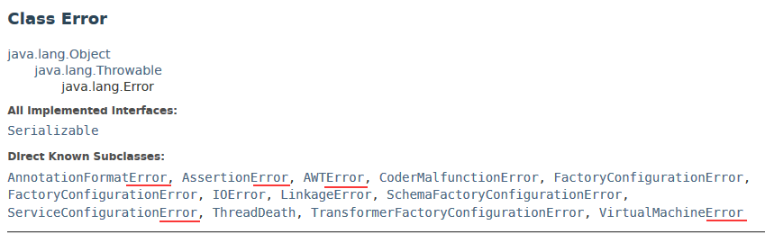
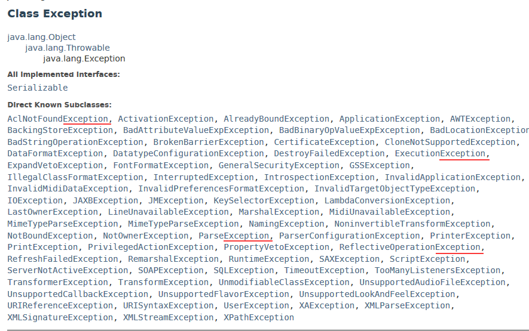
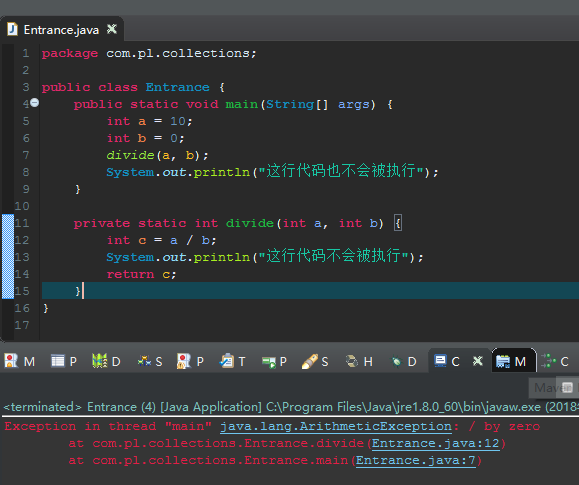
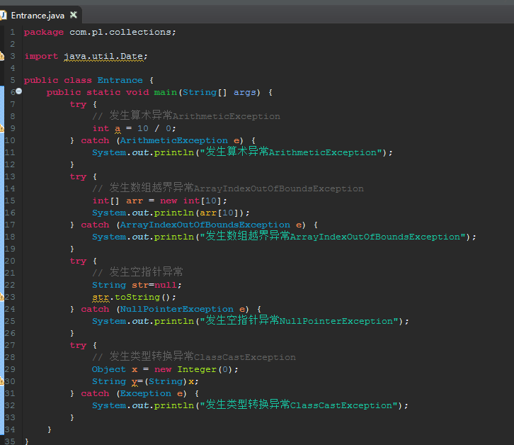

概述
在java中错误（Error）和异常（Exception）是两种不同的概念，它们有一个共同的父类Throwable；其中Error一般是程序员无法解决的，如断电、内存溢出等，是程序写得再好都没有办法解决的。其中Exception是程序必须解决的，Exception分为运行时异常和非运行时异常两种，运行时异常是代码本身写的有问题而产生的（如除0异常），必须修改代码；而非运行时异常是java给定义的很可能会发生异常的地方需要程序员手动显式解决的问题（如网络错误、io流错误等），非运行时异常不是代码本身的问题，更多的是为了代码的健壮性而要求程序员手动显式解决的可预见的问题。
错误（Error）
在java中错误（Error）一般是程序员无法解决的，如断电、内存溢出等，是程序写得再好都没有办法解决的。
在java中错误（Error）类一般是以Error为结尾的，如下的一部分错误：

如下面例子，申请了一个超大容量的数据，已经超出了jvm的内存大小，造成内存溢出，直接报错误（Error）

异常（Exception）
异常（Exception）分为两类：运行时异常和非运行时异常（有时候也叫编译期异常）
在java中异常（Exception）类一般是以Exception为结尾的，如下的一部分异常：

运行时异常
运行时异常的发生一般是由于程序员考虑的不到位，使得程序出现bug，这种情况是建议程序员修改代码的
如果发生运行时异常，则后面的代码不会得到执行，如下例子：

常见运行时异常

非运行时异常（编译期异常）
非运行时异常是java可预见到的一些异常，强制要求程序员显式处理